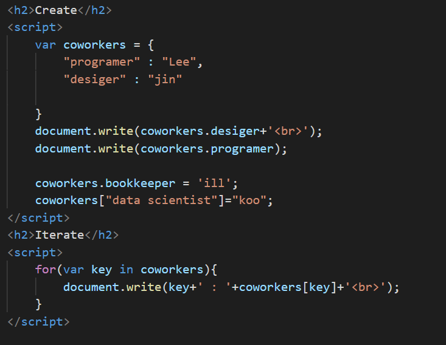

JavaScript

자바스크립트(영어: JavaScript)는 객체 기반의 스크립트 프로그래밍 언어이다. 이 언어는 웹 브라우저 내에서 주로 사용하며, 다른 응용 프로그램의 내장 객체에도 접근할 수 있는 기능을 가지고 있다. 또한 Node.js와 같은 런타임 환경과 같이 서버 프로그래밍에도 사용되고 있다. 자바스크립트는 본래 넷스케이프 커뮤니케이션즈 코퍼레이션의 브렌던 아이크(Brendan Eich)가 처음에는 모카(Mocha)라는 이름으로, 나중에는 라이브스크립트(LiveScript)라는 이름으로 개발하였으며, 최종적으로 자바스크립트가 되었다. 자바스크립트가 썬 마이크로시스템즈의 자바와 구문이 유사한 점도 있지만, 이는 사실 두 언어 모두 C 언어의 기본 구문에 바탕을 뒀기 때문이고, 자바와 자바스크립트는 직접적인 관련성이 없다. 이름과 구문 외에는 자바보다 셀프나 스킴과 유사성이 많다.
생활코딩 JavaScript
2021년 3월 15일 오후 5시 04분
생활코딩 JavaScript편을 모두 수강하였다. html, css와는 달리 프로그래밍 언어로 분류되어있어 c, java를 조금아는 나한테는 이해하기 쉬운 파트였다.
강의를 다 들은것이 끝이 아니라 이제 나만의 프로젝트를 스스로 만들가는 시작점에 섰다고 생각이 들었다.
무엇을 만들어볼까 생각하고 고심해보자.
JavaScript는 사용자와 상호작용하는 언어이고 html을 제어하는 언어이다.
- <script>
해당 태그 안에 있는 코드는 JavaScript코드로 해석된다.
"document.write();"로 출력하고자 하는 내용을 작성한다. 괄호 안에 1+1이 들어가면 2로 출력되고 '1+1'이 들어가면 11로 출력된다. - 이벤트
웹 브라우저 위에서 일어나는 일을 말한다.
- onclick : 어떤 이벤트가 일어났을 때 어떠한 JavaScript코드를 실행하게 하는 것
- onchange : 내용이 변했을 때를 체크하는 이벤트
- onkeydown : 사용자가 어떤 키를 눌렀을 때 이벤트 발생
- 리팩터링(Refactoring,중복제거)
코드의 가독성을 높이고, 유지보수를 편리하게 만들고, 중복된 코드를 줄이는 방향으로 코드를 개선하는 작업이다.
-> "this"를 활용하였다. - 배열
- JavaScript에서 배열에 data추가 :
- JavaScript에서 배열에 (마지막)data제거 :
- JavaScript에서 배열에 (처음)data제거 :
- ex)
배열명.push('추가하고자하는 데이터명');
배열명.pop();
배열명.shift();
console.log(); : ()안의 data가 콘솔창에 출력
- 함수
코드를 잘 정리하기위한 도구이다.(단편적인 의미)
- argument(인자) : 매개변수의 값
- parameter(매개변수) : 함수로 전달되는 변수
- 객체
공통된 변수와 함수를 그루핑한다.
- 객체의 생성과 순회
- Method : 객체에 소속된 함수
- Property : 객체에 소속된 변수(JAVA에서의 멤버)이며 ","로 구분한다.

- 라이브러리 VS 프레임워크
- 라이브러리
- 프레임워크
부품을 가져온다고 생각하자. 무엇인가 정리정돈 되어있는 곳이며 내가 만들고자 하는
프로그램에 필요한 부품들이 되는 소프트웨어들을 재사용하기 쉽게 되어있는 소프트웨어이다.
ex) 자재와 가구 같은 집에 필요한 재료공통적인 부분은 프레임워크로 만들고 필요에 따라 수정
ex)집의 수도나 뼈대같은 기본적인 구조는 있으니 내가 꾸미기만하면 됨 - jquery
JavaScript 라이브러리 중에서 가장 오래되고 안정되었으며 유명하다. 하지만 현재는 쇠퇴하는 경향
- ex)$('a') : 이 웹페이지의 모든 <a>태그를 jquery로 제어한다.
- UI VS API
- UI
- API
사용자가 시스템을 제어하기 위해 사용하는 조작장치
그 조작장치를 만들려면 API를 가져와서 만들 수 있다.